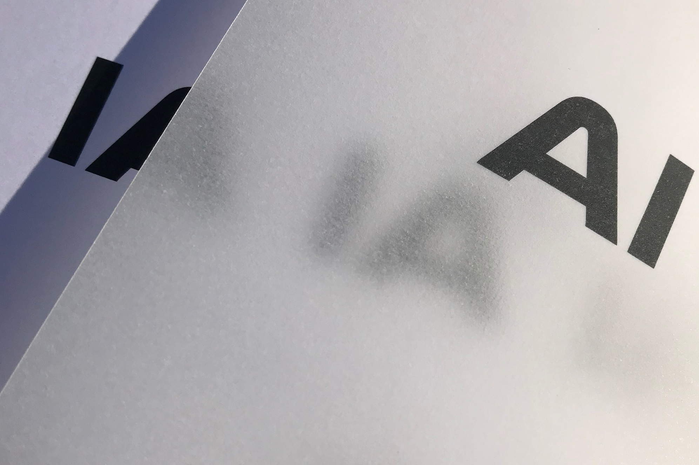
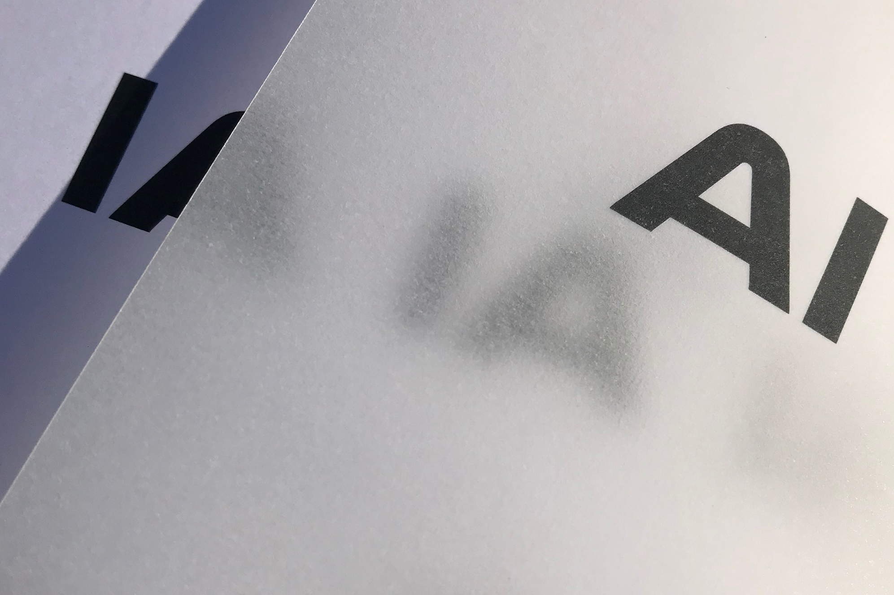

FLOU

Editorial Design & Graphic Design
Designed at ECV Bordeaux
2019
Flou is an editorial project raising awareness of transhumanism and artificial intelligence. It teaches us about a subject that seems vague and questioning our future as humans with the arrival of machines & NBIC in our daily lives. This project consists of a book, a game, a leporello, as well as a poster.


 
